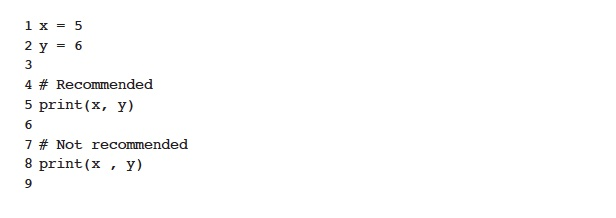

Whitespace on either side of an operator can be useful for reading but whitepace at the end of punctuation or at the end of the line can cause errors. It is recommended that you add a space after a comma, semi-colon, or colon, but not after:

Do not put a space before brackets: